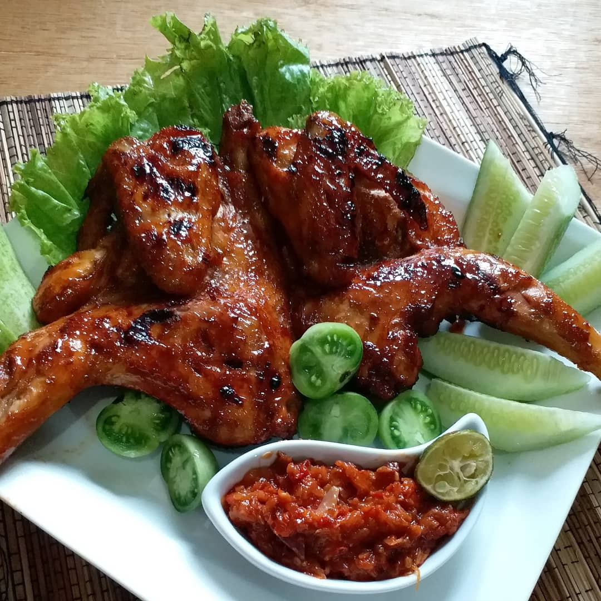
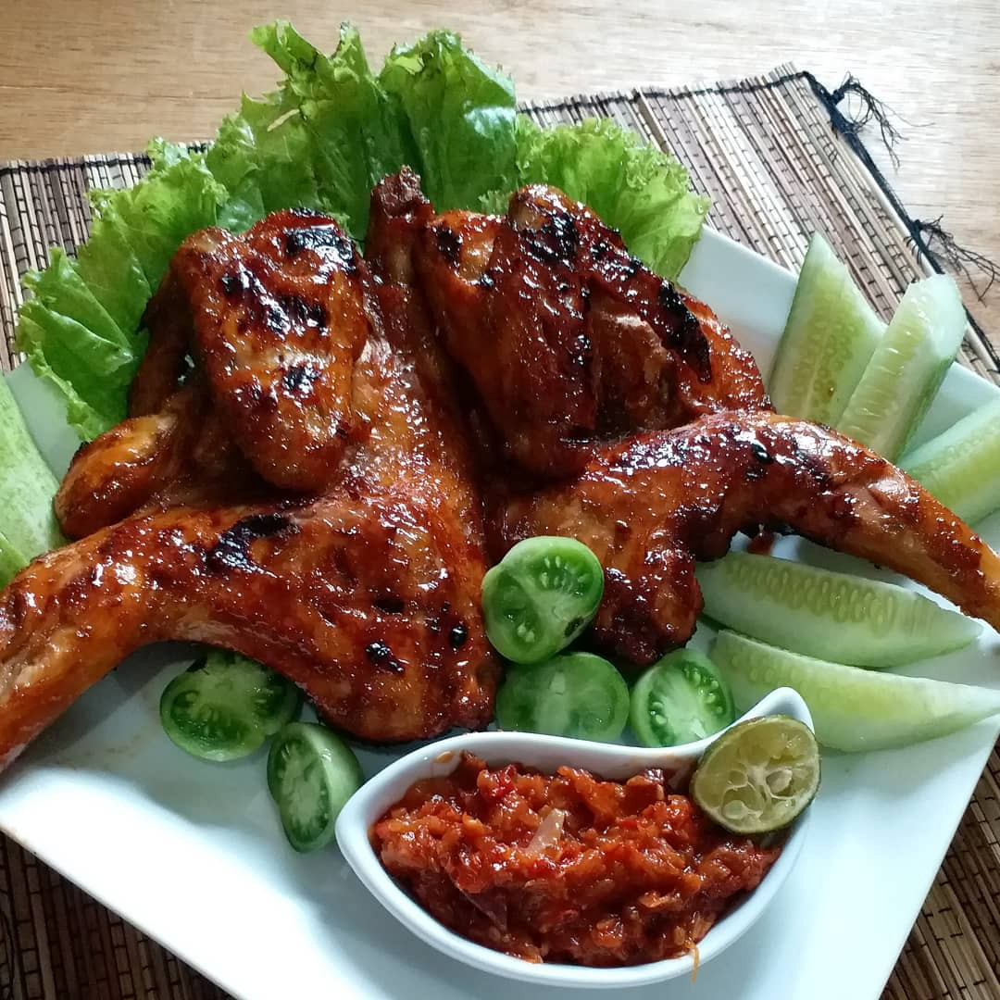
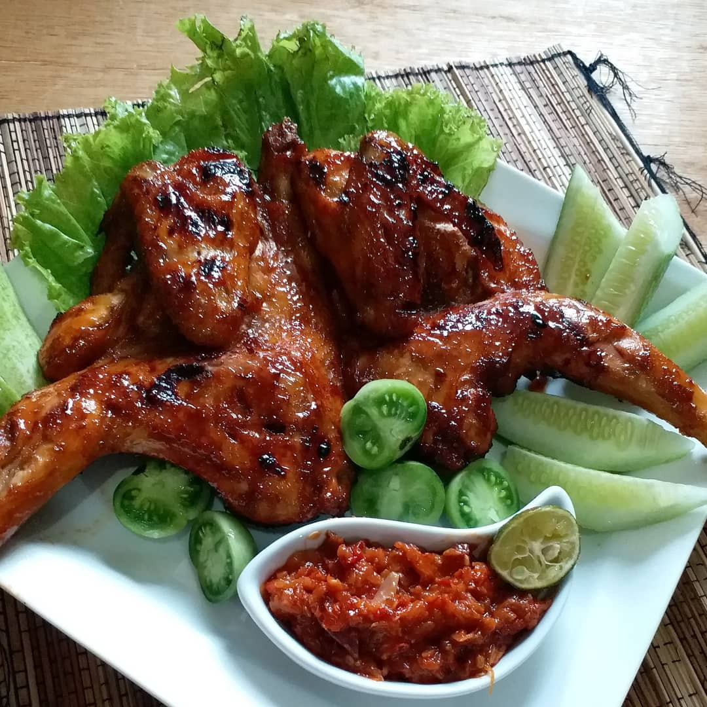

House & Cook
Recommended for you
Yuni Kumalasari 
Ayam bakar
Bahan:
-500g daging ayam
-6 siung bawang merah
-4 siung bawang putih
-4 butir kemiri
-4 cm lengkuas
Langkah pembuatan:
Order Ingredient

 Yuni Kumalasari

Yuni Kumalasari
